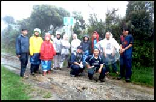

Conquering
Mount Pulag
by: Brian Co

>>>
click here for more pictures
Conquering
Mt. Pulag: A Hesitant Climber’s Account: Day 2
Day 2, Aug 22, 4:15 am
After more than six hours of traveling, we finally arrived
at Baguio City. Two more people were joining the group and
we all agreed to meet at Chowking in Session Road. Harold
also asked the jeeps which were taking us to Ambangeg to meet
us there.
At Chowking, only one cash register was working. This meant
that there was a very long line of hungry people. Fortunately,
the Chowking staff was quite efficient and was able to prevent
tempers from flaring.
After breakfast, majority of the group decided to order take-out
for lunch. After packing these lunches inside our bag, we
were raring to go. Because we were such a large group, we
hired two jeeps. Mark, Francis, Jojo, Joel, Ryan and I were
in one jeep while Harold, Lorna, and Precious were in another.
I was feeling pretty excited and steeling my nerves for the
long and tiring journey ahead. In hindsight, I sometimes wonder,
would I have decided to continue with the climb if I had known
then what surprises Mt. Pulag would have in store for us?
Day 2, Aug 22, 5:50 am
Shortly before six in the morning, we left Chowking for the
DENR station. We were hoping to get there before lunch so
that we can reach the campsite before dark. Our first stop
was beside a hanging bridge. A few people decided to cross
the bridge to see what was on the other side while the others
were content with waiting inside the jeeps. After taking a
few pictures, we were off again. Our next stop was the Ambuklao
dam. It was really “dam” big (pun intended). J
Day 2, Aug 22, 11:00 am
We finally reached the DENR office. Before climbing, it was
government policy that all visitors to the Mt. Pulag National
Park attend an orientation seminar. It was no surprise that
there were three other groups present during the orientation.
After all, with GMA’s holiday economics, it was another
long weekend.
The orientation was conducted by Ms.Emerita Tamiray. To tell
you the truth, I was too tired and sleepy to be able to understand
everything Ms. Tamiray was discussing. She even showed us
an American video showing basic campsite etiquette; however,
I did get the impression that she is a very hard-working lady
and that the DENR is lucky is to have her working with them.
Since it was past lunch time, we decided to take our lunch
before continuing with the journey. As fate would have it,
this was when it started to rain. It dawned on me then that
it was going to be a really LONG day.
Day 2, Aug 22, 1:00 pm
After a few more minutes going uphill, it was apparent that
we had to walk the rest of the way up. The trail was simply
too wet and muddy for the jeep to continue. At this point,
you have to understand that our goal like any other mountain
climber was to reach Mt. Pulag’s summit.
The planned itinerary was simple enough:
· From Baguio, travel by jeep to the ranger station,
· Walk about three hours to get to the camp site,
· Spend the night in camp,
· From camp and while still dark, hike another one-a-half
hours to get to the summit,
· Enjoy the sunrise!
It seemed logical and manageable at that time. Of course,
several members of the group (like myself) were first-time
climbers and did not know any better. “Carpe Diem,”
we said.
Day 2, Aug 22, 3:00 pm
The first three hours were for me the hardest. It was during
this time when I truly realized just how “out of shape”
I was. By 4:30 pm, every step was excruciating, every movement
torturous, and every path, more tortuous. It didn’t
help that the trail was mostly uphill and that by this time,
rain was starting to pour harder.
We kept asking people we meet on the way up how much farther
the ranger station was and they kept giving us the same standard
answer: “Malayo pa.” First, a lady told us that
it was still about one hour away. After an hour, we asked
another person and he told us that it was just thirty minutes
away. After another hour, we asked a third lady and she told
us that it was still thirty minutes away. We were getting
frustrated, to say the least.
The higher the altitude got, the lower the temperature became.
And I still haven’t factored in the wind chill factor.
Having a slight breeze or even a moderately strong wind blow
over you on a sunny day can be a pleasant experience but when
you’re wet, bone tired, and cold, even the slightest
gust of wind becomes rather painful.
Day 2, Aug 22, 5:00 pm
Four hours ago, I couldn’t wait to start the trek.
Now, I’m just about ready to start cursing Harold and
all his ancestors. But that wouldn’t be fair to him.
After all, I wasn’t dragged kicking and screaming. I
came on my own free will (insane maybe but still free will).
We also had an inkling that the weather wasn’t ideal
for mountain climbing. After all, two days before we left,
a typhoon devastated Luzon with news that another one was
on its tail.
This was when I decided that I had to get to the ranger station
as soon as possible. It was either that or I’ll just
lie in the middle of the road and wait for certain death.
Day 2, Aug 22, 6:00 pm
At long last, after knocking on several doors asking for
directions, I finally reached the ranger station. I had to
read the sign several times because I couldn’t believe
that I finally made it. And guess what, there wasn’t
a ranger in sight. I had to double back a few meters and ask
the neighboring houses if I was in the right place just to
be sure.
Luckily, when I got back to the ranger station, Samuel, a
ranger was inside the station. After several minutes, I saw
Joel hurrying towards the shelter.
Day 2, Aug 22, 7:00 pm
By this time, Lorna, Pres, Ryan, Mark, Francis, Johnny, Jojo,
Kat (Mark’s girlfriend), Joy & Jeff (Pres’
friends), and Joel (Mark’s friend) found their way to
the ranger station. We immediately began plans to cook dinner
and discuss the sleeping arrangements.
While Jeff, Lorna, Pres, Johnny, Joel K., and I were busy
with preparing the nilagang baka, pork teriyaki, and rice,
the others were changing into dry clothes.
Let me tell you this, the meal was superb. We feasted like
we hadn’t eaten for days. After dinner, everyone was
eager to talk about the shared experience. One person mentioned
that he didn’t think he’d survive. Another said
that it was one of the most thrilling experiences of her life.
As for me, I honestly can say that I haven’t felt cold
like I did at that time.
|